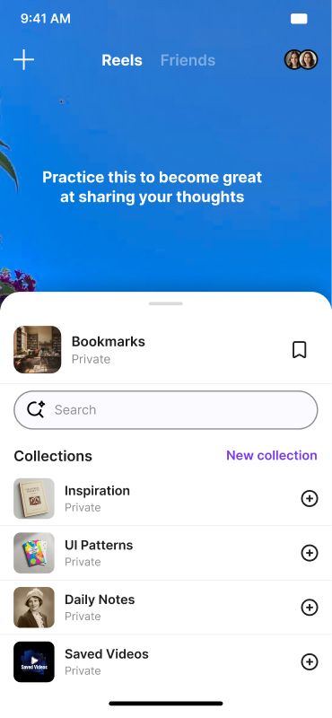
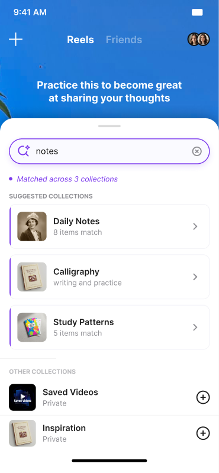
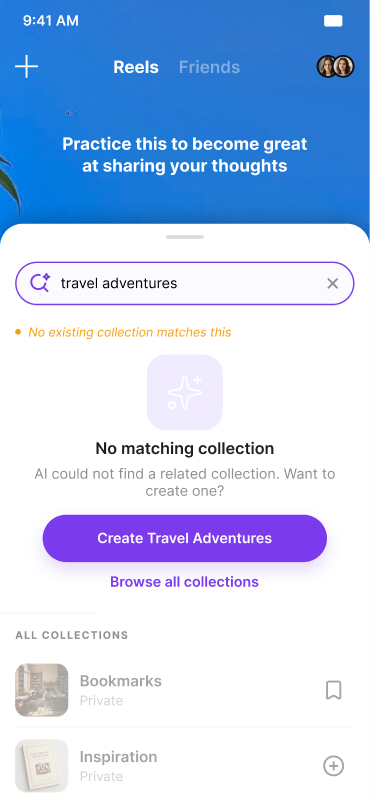
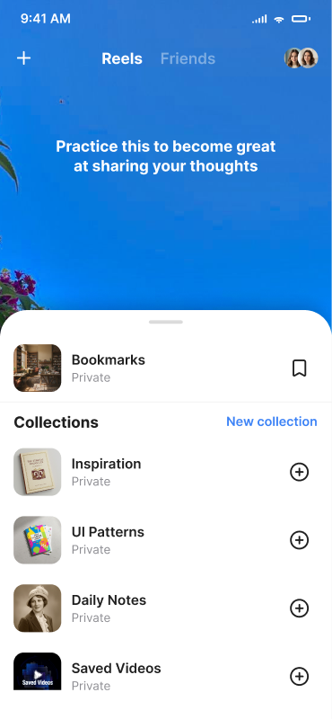
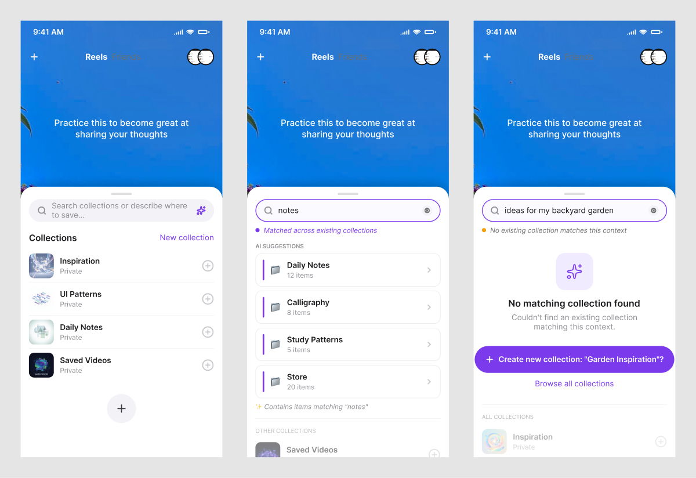

Redesigning how 2 billion people save and find Reels, posts, and messages — using natural language instead of manual folders.



The Problem
Instagram lets you save posts — but gives you almost no tools to organise them. Collections exist but are manually managed, opaque, and completely disconnected from search. Most users save hundreds of posts and can only find them by endlessly scrolling. The result: saved content has near-zero retrieval rate and the feature is widely considered useless.
The Opportunity
Instead of manually filing posts into named folders, what if you could just search "notes" or "travel ideas" and the AI figures out which of your collections match — or offers to create one that does?
This redesign introduces an AI layer into Instagram's existing Collections system: a smart bottom sheet that surfaces when you tap Save, with natural language search powered by AI matching across your existing collections.
The Core Flow
Three screens. One fluid gesture. The AI does the matching.
Feature Deep Dive
The bottom sheet is white — not dark. It sits as a clean, bright layer above the Reel video playing behind it, immediately signalling "you're in a different mode." The contrast between the colourful, unpredictable video content and the crisp white sheet is what creates the sense of depth — not a dark colour scheme.
Collections are listed with cover thumbnails so users recognise them visually before reading the name. A prominent AI-powered search bar sits at the top, making the smart capability visible from the very first interaction.
Feature Deep Dive
When a user types "notes", the AI doesn't just string-match collection names. It matches semantically — "Daily Notes", "Calligraphy", "Study Patterns" all surface because the AI understands the intent, not just the word.
Results are ranked by match strength — the screen shows "Matched across 3 collections" so users can immediately see how many collections relate to their search without opening each one. A purple left border marks AI-suggested results vs manual ones.
Feature Deep Dive
When nothing matches "travel adventures", rather than showing a dead end, the AI surfaces a single CTA: "Create Travel Adventures" — with the name already generated from the search query. One tap and the collection exists.
A soft amber dot (vs the green match dot) signals "no existing match" without being alarming. The empty state has enough breathing room that it feels intentional, not broken.
Ideation & Iterations
Three screen states explored side-by-side — from empty browse to AI match to AI creation. Each iteration refined the surface depth, colour signals, and empty state language.


Design Decisions
The bottom sheet is white (#FFFFFF) so it works on top of any Reel — bright, dark, or highly colourful. A dark or translucent sheet would fight with certain video backgrounds; a white sheet stays legible no matter what's playing behind it.
Instagram already uses its purple-to-orange gradient for Stories and the camera. Using purple for AI suggestions creates a consistent signal: "this is Instagram doing something smart for you" — no new colour introduced.
The previous save flow required opening a picker, scrolling collections, and tapping. The AI search replaces all of that with a text input — lower friction, zero learning curve, and it actually works for users with 50+ collections.
The AI suggests a collection name derived from the search query, but the user still taps to confirm. This keeps the user in control while removing the blank-input friction that stops people from creating collections in the first place.
Process
Reflection
All screens, surface tokens, and AI-generated explorations are in the file.
Open in Figma ↗